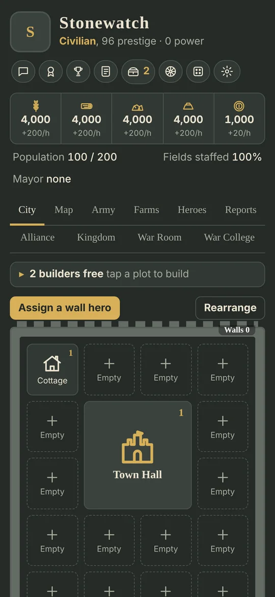
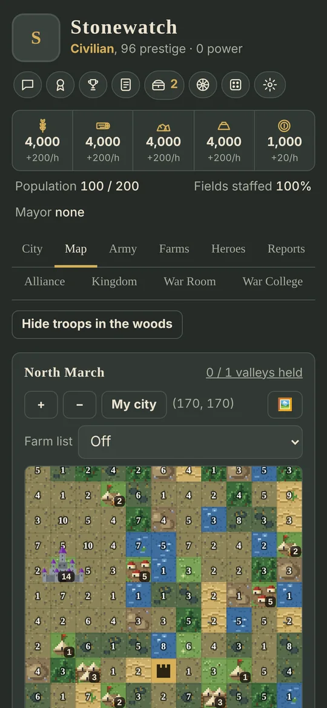
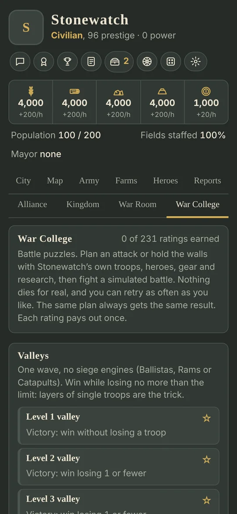
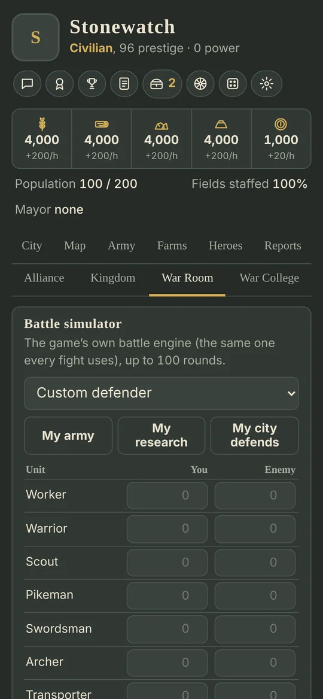
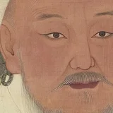
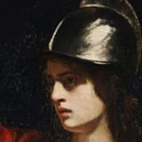
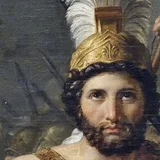
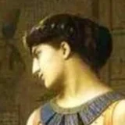

The king is gone. The kingdom is yours to hold.
A slow, real-time medieval strategy game. Free to play, no ads, and nothing to buy that makes you stronger.
How it plays
Build for the long haul
Grow one town into a kingdom of cities. Buildings and research take hours, then days, and every city keeps its own tech tree. There's no speed button.
Fight by the numbers
Every battle runs on one engine with the same rules for you, NPC cities and other players. Troop types, fortifications, research and hero stats all count, and the War Wizard replays any fight round by round. Test plans in the battle simulator and the War College puzzles.
Alone, or with an alliance
Play single player for as long as you like. Make a free account for cloud saves, high scores, world chat, alliance rallies and reinforcements, opt-in invasions and PvP battlefields.




Heroes from history
Spin the wheel for heroes to lead your marches, run your cities and man your walls. The greatest are held in the historic cities on the map: break a city's loyalty and its hero joins you.
- Joan of Arc

Genghis Khan- Saladin

Boudica- Charlemagne

Leonidas- Tomyris
- Sun Tzu
- Julius Caesar

Cleopatra
Meant to take a long time
Medals drop from under 1% of victories. Gear is crafted from very rare materials, and a historic hero is a real milestone. If that sounds good, you'll fit right in.